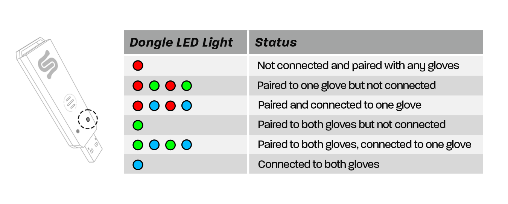
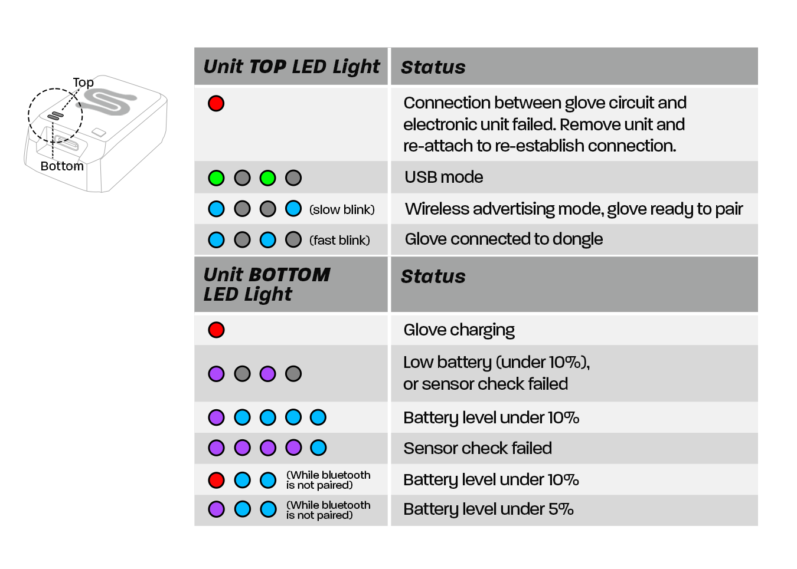
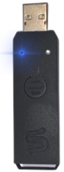
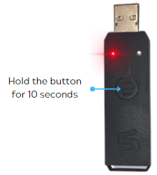

Setting Up Your Studio Glove Hardware
USB Bluetooth Dongle
The Studio gloves pair can be paired to a single USB Bluetooth dongle. Out of the box, it is already paired to each glove.
1- Please connect the USB Bluetooth Dongle to any USB 3.0 port on your PC (please see the Tips section below for more information).
2- The USB Bluetooth dongle will display a solid green LED, indicating that it is ready to pair with the Studio gloves. Refer to the chart below for the different dongle LED light states (if the dongle has a red LED light, follow the second section of this guide Pairing USB Bluetooth Dongle).

NOTE: Only one LED will alternate colors to indicate the connection status. The second LED will remain off and is only used during a firmware update.
3- Power on your Studio gloves by pressing the power button on top of the glove once.
4- A slow flashing blue LED on the glove means that it is not currently connected to a USB Bluetooth dongle (one second on, one second off). Refer to the chart below for the different glove LED light states. 
NOTE: The gloves will power off after 90 seconds if not connected to a dongle.IMPORTANT: If the LED light on the glove is red after connecting the electronics module, apply firm pressure on the module and try turning it on again.
5- The gloves will automatically connect to their paired dongle. Once connected, the glove LED will change to a flashing blue LED (one quick flash every second) and the USB Bluetooth Dongle will have a solid blue LED.

6- You are now ready to connect to Hand Engine.
Tip: For the best Bluetooth signal
The antenna on the USB dongle is designed to radiate perpendicular to the dongle.
To ensure the best signal performance:
- Place the dongle away from the floor as it degrades the signal quality, it will also work best if it has a line of sight to your gloves.
- Position the dongle vertically. This ensures the antenna is in the correct orientation for best performance.
- Use a powered USB hub if required.
- Avoid plugging dongles in behind a desktop PC. The proximity to other electronics, power cables, and metal objects will degrade the signal.
- Both the gloves and dongle have antennas to enable the advertised 50ft/15m range, even with some interference.
Tip: Using a USB Hub
You may use a USB Hub to connect your USB Bluetooth Dongle.
Please make sure that the USB Hub you are using has its own independent power supply. This is very important if the hub is located at the end of a USB extension cable.
Pairing USB Bluetooth Dongle
Out of the box, your gloves should already be paired to the USB Bluetooth dongle.
If your gloves are no longer paired to the USB Bluetooth Dongle, or you have received a replacement dongle, please follow these instructions to re-pair.
- Please turn all gloves off in the vicinity.
- Make sure the USB Bluetooth Dongle is connected and is showing a solid green LED.
- Press and hold the button on the top for approximately 10 seconds while the dongle is plugged in.

- The LED on the USB Bluetooth dongle will turn solid red.
- Power on the gloves and place them within 10cm of the USB Bluetooth Dongle.
- The dongle LED will change to solid green, and then to solid blue once the gloves have connected.